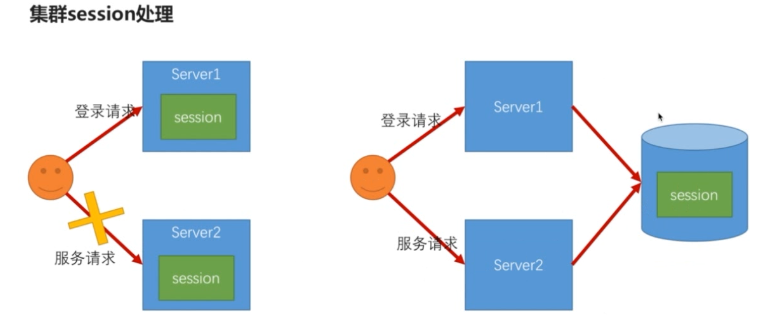

<!DOCTYPE html>
<html>
  <head>
    <meta charset="utf-8">
    <meta http-equiv="X-UA-Compatible" content="IE=edge">
    <meta name="viewport" content="width=device-width, initial-scale=1, maximum-scale=1">
    
    <meta name="theme-color" content="#33363b">
    <meta name="msapplication-TileColor" content="#33363b">
    
    
    
    <meta name="keywords" content="Life, ARIA, Hexo">
    
    
    <link rel="apple-touch-icon" sizes="180x180" href="/favicons/apple-touch-icon.png">
    
    
    <link rel="icon" type="image/png" sizes="192x192" href="/favicons/android-chrome-192x192.png">
    
    
    <link rel="icon" type="image/png" sizes="32x32" href="/favicons/favicon-32x32.png">
    
    
    <link rel="icon" type="image/png" sizes="16x16" href="/favicons/favicon-16x16.png">
    
    
    <link rel="mask-icon" href="/favicons/safari-pinned-tab.svg" color="#33363b">
    
    
    <link rel="manifest" href="/favicons/site.webmanifest">
    
    
    <meta name="msapplication-config" content="/favicons/browserconfig.xml">
    
    
    <link rel="alternate" href="/atom.xml" title="程序猿的日常" type="application/atom+xml" />
    
    
    <link rel="shortcut icon" type="image/x-icon" href="/favicons/favicon.ico">
    
    
    <link rel="stylesheet" type="text/css" href="/css/normalize.css">
    <link rel="stylesheet" type="text/css" href="/css/index.css">
    
    <link rel="stylesheet" type="text/css" href="/css/sidebar.css">
    
    
<link rel="stylesheet" type="text/css" href="/css/page.css">
<link rel="stylesheet" type="text/css" href="/css/post.css">

    <link rel="stylesheet" type="text/css" href="/css/custom.css">
    <link rel="stylesheet" type="text/css" href="/css/atom-one-dark.css">
    <link rel="stylesheet" type="text/css" href="/css/lightgallery.min.css">
    <script type="text/javascript" src="/js/jquery.min.js"></script>
    <script defer type="text/javascript" src="/js/util.js"></script>
    <script defer type="text/javascript" src="/js/scrollspy.js"></script>
    <script defer type="text/javascript" src="/js/fontawesome-all.min.js"></script>
    <script defer type="text/javascript" src="/js/lightgallery.min.js"></script>
    <script defer type="text/javascript" src="/js/lg-fullscreen.min.js"></script>
    <script defer type="text/javascript" src="/js/lg-hash.min.js"></script>
    <script defer type="text/javascript" src="/js/lg-pager.min.js"></script>
    <script defer type="text/javascript" src="/js/lg-thumbnail.min.js"></script>
    <script defer type="text/javascript" src="/js/lg-zoom.min.js"></script>
    
    <script defer src="/js/busuanzi.pure.mini.js"></script>
    
    
    <script defer type="text/javascript" src="/js/search.js"></script>
    <script type="text/javascript">
    $(document).ready(function () {
      var searchPath = "search.xml";
      if (searchPath.length === 0) {
        searchPath = "search.xml";
      }
      var path = "/" + searchPath;
      searchFunc(path, "search-input", "search-result");
    });
    </script>
    
    
    <script defer type="text/javascript" src="/js/index.js"></script>
    
    <script defer type="text/javascript" src="/js/custom.js"></script>
    <title>使用 Maven Module 搭建spring boot项目（整合Spring Security、Spring Social、spring OAuth）四 | 程序猿的日常</title>
  </head>
  <body itemscope itemtype="http://schema.org/WebPage" lang="default"  data-spy="scroll" data-target=".list-group">
    
<header id="header" class="header" style="background: #33363b;">
  <div class="container">
    <div class="header-container">
      <div class="header-title">
        <h1 class="title"><a href="/">程序猿的日常</a></h1>
        <h2 class="subtitle"></h2>
      </div>
      <div class="logo">
        
      </div>
    </div>
    
<nav id="nav" class="nav">
  <a id="nav-toggle" class="nav-toggle"><i class="fas fa-bars"></i></a>
  <ul id="menu">
    
    <li><a href="/">首页</a></li>
    
    <li><a href="/archives/">Archives</a></li>
    
  </ul>
</nav>


  </div>
</header>


    <main id="main" class="main">
      <div class="container">
        <div class="main-container">
          <div class="content">
            
<div id="post" class="post">
  
  <article class="post-container card" itemscope itemtype="http://schema.org/Article">
    <div class="post-block">
      <link itemprop="mainEntityOfPage" href="http://yoursite.com/2018/07/12/spring_security/4.SpringSecuritySession/">
      <span hidden itemprop="author" itemscope itemtype="http://schema.org/Person">
       <meta itemprop="name" content="龙门小左">
       <meta itemprop="description" content="">
       <meta itemprop="image" content="/images/avatar.png">
      </span>
      <span hidden itemprop="publisher" itemscope itemtype="http://schema.org/Organization">
       <meta itemprop="name" content="程序猿的日常">
      </span>
    </div>
    <header class="post-header">
      <h1 class="post-title" itemprop="name headline">使用 Maven Module 搭建spring boot项目（整合Spring Security、Spring Social、spring OAuth）四</h1>
      <div class="post-meta">
        
        <span class="post-date">
          <i class="far fa-calendar-plus"></i><span><time title="post-date" itemprop="dateCreated datePublished" datetime="2018-07-12T10:00:00+08:00">2018-07-12 10:00:00</time></span>
        </span>
        
        
        
      </div>
    </header>
    <main class="post-main" itemprop="articleBody">
      <h1 id="使用-Maven-Module-搭建spring-boot项目（整合Spring-Security、Spring-Social、spring-OAuth）四"><a href="#使用-Maven-Module-搭建spring-boot项目（整合Spring-Security、Spring-Social、spring-OAuth）四" class="headerlink" title="使用 Maven Module 搭建spring boot项目（整合Spring Security、Spring Social、spring OAuth）四"></a>使用 Maven Module 搭建spring boot项目（整合Spring Security、Spring Social、spring OAuth）四</h1><table>
<thead>
<tr>
<th>版本号</th>
<th>作者</th>
<th>日期</th>
<th>备注</th>
</tr>
</thead>
<tbody>
<tr>
<td>V0.1</td>
<td>谭键胜</td>
<td>2018-04-03</td>
<td>初稿</td>
</tr>
<tr>
<td>V0.2</td>
<td>谭键胜</td>
<td>2018-04-20</td>
<td>新增并发流程说明</td>
</tr>
<tr>
<td>V0.3</td>
<td>谭键胜</td>
<td>2018-04-25</td>
<td>解决session并发登录退出失效问题</td>
</tr>
</tbody>
</table>
<hr>
<h2 id="Spring-boot-中应用-Spring-Session"><a href="#Spring-boot-中应用-Spring-Session" class="headerlink" title="Spring boot 中应用 Spring Session"></a>Spring boot 中应用 Spring Session</h2><p>spring session 只对浏览器环境下才生效,因此在浏览器项目中加入依赖</p>
<figure class="highlight xml"><table><tr><td class="gutter"><pre><span class="line">1</span><br><span class="line">2</span><br><span class="line">3</span><br><span class="line">4</span><br></pre></td><td class="code"><pre><span class="line"><span class="tag">&lt;<span class="name">dependency</span>&gt;</span></span><br><span class="line">    <span class="tag">&lt;<span class="name">groupId</span>&gt;</span>org.springframework.session<span class="tag">&lt;/<span class="name">groupId</span>&gt;</span></span><br><span class="line">    <span class="tag">&lt;<span class="name">artifactId</span>&gt;</span>spring-session<span class="tag">&lt;/<span class="name">artifactId</span>&gt;</span></span><br><span class="line"><span class="tag">&lt;/<span class="name">dependency</span>&gt;</span></span><br></pre></td></tr></table></figure>
<h3 id="单机Session管理"><a href="#单机Session管理" class="headerlink" title="单机Session管理"></a>单机Session管理</h3><h4 id="Session-超时和并发处理"><a href="#Session-超时和并发处理" class="headerlink" title="Session 超时和并发处理"></a>Session 超时和并发处理</h4><h5 id="spring-session-配置"><a href="#spring-session-配置" class="headerlink" title="spring session 配置"></a>spring session 配置</h5><figure class="highlight plain"><table><tr><td class="gutter"><pre><span class="line">1</span><br><span class="line">2</span><br></pre></td><td class="code"><pre><span class="line"># session 默认30分钟超时</span><br><span class="line">server.session.timeout = 600</span><br></pre></td></tr></table></figure>
<p>若配置session超时时间少于1分钟,则会设置为1分钟,也就是60秒</p>
<p>设置超时时间源码分析:</p>
<figure class="highlight java"><table><tr><td class="gutter"><pre><span class="line">1</span><br><span class="line">2</span><br><span class="line">3</span><br><span class="line">4</span><br><span class="line">5</span><br><span class="line">6</span><br><span class="line">7</span><br><span class="line">8</span><br><span class="line">9</span><br><span class="line">10</span><br><span class="line">11</span><br><span class="line">12</span><br><span class="line">13</span><br><span class="line">14</span><br><span class="line">15</span><br><span class="line">16</span><br><span class="line">17</span><br><span class="line">18</span><br><span class="line">19</span><br><span class="line">20</span><br><span class="line">21</span><br><span class="line">22</span><br><span class="line">23</span><br><span class="line">24</span><br><span class="line">25</span><br><span class="line">26</span><br><span class="line">27</span><br><span class="line">28</span><br><span class="line">29</span><br><span class="line">30</span><br><span class="line">31</span><br><span class="line">32</span><br><span class="line">33</span><br><span class="line">34</span><br><span class="line">35</span><br></pre></td><td class="code"><pre><span class="line"><span class="keyword">package</span> org.springframework.boot.context.embedded.tomcat;</span><br><span class="line"></span><br><span class="line"><span class="keyword">public</span> <span class="class"><span class="keyword">class</span> <span class="title">TomcatEmbeddedServletContainerFactory</span></span>&#123;</span><br><span class="line">    </span><br><span class="line">    <span class="comment">//配置session</span></span><br><span class="line">    <span class="function"><span class="keyword">private</span> <span class="keyword">void</span> <span class="title">configureSession</span><span class="params">(Context context)</span> </span>&#123;</span><br><span class="line">        <span class="comment">//获得session的超时时间</span></span><br><span class="line">        <span class="keyword">long</span> sessionTimeout = <span class="keyword">this</span>.getSessionTimeoutInMinutes();</span><br><span class="line">        context.setSessionTimeout((<span class="keyword">int</span>)sessionTimeout);</span><br><span class="line">        <span class="keyword">if</span> (<span class="keyword">this</span>.isPersistSession()) &#123;</span><br><span class="line">            Manager manager = context.getManager();</span><br><span class="line">            <span class="keyword">if</span> (manager == <span class="keyword">null</span>) &#123;</span><br><span class="line">                manager = <span class="keyword">new</span> StandardManager();</span><br><span class="line">                context.setManager((Manager)manager);</span><br><span class="line">            &#125;</span><br><span class="line"></span><br><span class="line">            <span class="keyword">this</span>.configurePersistSession((Manager)manager);</span><br><span class="line">        &#125; <span class="keyword">else</span> &#123;</span><br><span class="line">            context.addLifecycleListener(<span class="keyword">new</span> TomcatEmbeddedServletContainerFactory.DisablePersistSessionListener(<span class="keyword">null</span>));</span><br><span class="line">        &#125;</span><br><span class="line"></span><br><span class="line">    &#125;</span><br><span class="line">    </span><br><span class="line">    <span class="comment">//获得session超时时间</span></span><br><span class="line">    <span class="function"><span class="keyword">private</span> <span class="keyword">long</span> <span class="title">getSessionTimeoutInMinutes</span><span class="params">()</span> </span>&#123;</span><br><span class="line">        <span class="keyword">long</span> sessionTimeout = (<span class="keyword">long</span>)<span class="keyword">this</span>.getSessionTimeout();</span><br><span class="line">        <span class="keyword">if</span> (sessionTimeout &gt; <span class="number">0L</span>) &#123;</span><br><span class="line">            <span class="comment">//将秒数转化为分数,如果小与1则按1分钟算</span></span><br><span class="line">            sessionTimeout = Math.max(TimeUnit.SECONDS.toMinutes(sessionTimeout), <span class="number">1L</span>);</span><br><span class="line">        &#125;</span><br><span class="line"></span><br><span class="line">        <span class="keyword">return</span> sessionTimeout;</span><br><span class="line">    &#125;</span><br><span class="line">    </span><br><span class="line">&#125;</span><br></pre></td></tr></table></figure>
<h5 id="Spring-Security-对-Session-过期处理"><a href="#Spring-Security-对-Session-过期处理" class="headerlink" title="Spring Security 对 Session 过期处理"></a>Spring Security 对 Session 过期处理</h5><p>spring-security-web包中提供了spring security 对session的管理，提供两个过滤器<code>ConcurrentSessionFilter</code>与<code>SessionManagementFilter</code></p>
<p>spring security对session过期的处理可以是</p>
<ol>
<li>配置session失效的处理url(注意要放开URL的权限)</li>
</ol>
<figure class="highlight java"><table><tr><td class="gutter"><pre><span class="line">1</span><br><span class="line">2</span><br></pre></td><td class="code"><pre><span class="line">http.sessionManagement()</span><br><span class="line">    .invalidSessionUrl(URL)<span class="comment">//配置session失效跳转的url</span></span><br></pre></td></tr></table></figure>
<ol start="2">
<li>配置seesion失效策略处理器(设置了处理器则配置失效的url就会失效)</li>
</ol>
<figure class="highlight java"><table><tr><td class="gutter"><pre><span class="line">1</span><br><span class="line">2</span><br><span class="line">3</span><br></pre></td><td class="code"><pre><span class="line">http.sessionManagement()</span><br><span class="line">    .invalidSessionUrl(URL)<span class="comment">//配置session失效跳转的url</span></span><br><span class="line">    .invalidSessionStrategy(invalidSessionStrategy)<span class="comment">//session过期处理器,invalidSessionUrl就会失效</span></span><br></pre></td></tr></table></figure>
<h5 id="Spring-Security-对-Session-并发处理"><a href="#Spring-Security-对-Session-并发处理" class="headerlink" title="Spring Security 对 Session 并发处理"></a>Spring Security 对 Session 并发处理</h5><p>控制用户在系统中只能有一个或指定个数的session</p>
<h6 id="并发处理的策略"><a href="#并发处理的策略" class="headerlink" title="并发处理的策略"></a>并发处理的策略</h6><ol>
<li>踢掉策略</li>
</ol>
<p>后登录的session会使前一个登录的session失效掉,通过以下配置实现,并且可配置因并发失效处理的URL</p>
<figure class="highlight java"><table><tr><td class="gutter"><pre><span class="line">1</span><br><span class="line">2</span><br><span class="line">3</span><br></pre></td><td class="code"><pre><span class="line"><span class="comment">//开启session管理功能</span></span><br><span class="line">		http.sessionManagement().maximumSessions(number)</span><br><span class="line">         	.expiredUrl(URL) <span class="comment">//处理返回给失效session的url</span></span><br></pre></td></tr></table></figure>
<ol start="2">
<li>禁止策略</li>
</ol>
<p>禁止后登录的session登录进入,当前正在系统的session继续使用</p>
<figure class="highlight java"><table><tr><td class="gutter"><pre><span class="line">1</span><br><span class="line">2</span><br><span class="line">3</span><br><span class="line">4</span><br></pre></td><td class="code"><pre><span class="line">http.sessionManagement().maximumSessions(number)</span><br><span class="line">         	.expiredUrl(URL) <span class="comment">//处理返回给失效session的url</span></span><br><span class="line">         	.maxSessionsPreventsLogin(<span class="keyword">true</span>) <span class="comment">//默认为false,不阻止登录</span></span><br><span class="line">         	<span class="comment">//.expiredSessionStrategy() 设置并发策略,则会让expiredUrl配置失效</span></span><br></pre></td></tr></table></figure>
<h5 id="实现Session过期与并发处理"><a href="#实现Session过期与并发处理" class="headerlink" title="实现Session过期与并发处理"></a>实现Session过期与并发处理</h5><p>1.定义自定义session属性配置,并将其加入<code>BrowserProperties</code>中</p>
<figure class="highlight plain"><table><tr><td class="gutter"><pre><span class="line">1</span><br><span class="line">2</span><br><span class="line">3</span><br><span class="line">4</span><br><span class="line">5</span><br><span class="line">6</span><br><span class="line">7</span><br><span class="line">8</span><br><span class="line">9</span><br><span class="line">10</span><br><span class="line">11</span><br><span class="line">12</span><br><span class="line">13</span><br><span class="line">14</span><br><span class="line">15</span><br><span class="line">16</span><br><span class="line">17</span><br><span class="line">18</span><br><span class="line">19</span><br><span class="line">20</span><br></pre></td><td class="code"><pre><span class="line">/**</span><br><span class="line"> * session的配置</span><br><span class="line"> * created by chuIllusions_tan 20180322</span><br><span class="line"> */</span><br><span class="line">public class SessionProperties &#123;</span><br><span class="line">	</span><br><span class="line">	/**</span><br><span class="line">	 * 同一个用户在系统中的最大session数，默认1</span><br><span class="line">	 */</span><br><span class="line">	private int maximumSessions = 1;</span><br><span class="line">	/**</span><br><span class="line">	 * 达到最大session时是否阻止新的登录请求，默认为false，不阻止，新的登录会将老的登录失效掉</span><br><span class="line">	 */</span><br><span class="line">	private boolean maxSessionsPreventsLogin;</span><br><span class="line">	/**</span><br><span class="line">	 * session失效时跳转的地址</span><br><span class="line">	 */</span><br><span class="line">	private String sessionInvalidUrl = SecurityConstants.DEFAULT_SESSION_INVALID_URL;</span><br><span class="line">	</span><br><span class="line">&#125;</span><br></pre></td></tr></table></figure>
<figure class="highlight java"><table><tr><td class="gutter"><pre><span class="line">1</span><br><span class="line">2</span><br><span class="line">3</span><br></pre></td><td class="code"><pre><span class="line"><span class="keyword">public</span> <span class="class"><span class="keyword">class</span> <span class="title">BrowserProperties</span> </span>&#123;</span><br><span class="line">    <span class="keyword">private</span> SessionProperties session = <span class="keyword">new</span> SessionProperties();</span><br><span class="line">&#125;</span><br></pre></td></tr></table></figure>
<ol start="2">
<li>使用模板方法定义策略抽象类,抽取相同的处理逻辑</li>
</ol>
<figure class="highlight java"><table><tr><td class="gutter"><pre><span class="line">1</span><br><span class="line">2</span><br><span class="line">3</span><br><span class="line">4</span><br><span class="line">5</span><br><span class="line">6</span><br><span class="line">7</span><br><span class="line">8</span><br><span class="line">9</span><br><span class="line">10</span><br><span class="line">11</span><br><span class="line">12</span><br><span class="line">13</span><br><span class="line">14</span><br><span class="line">15</span><br><span class="line">16</span><br><span class="line">17</span><br><span class="line">18</span><br><span class="line">19</span><br><span class="line">20</span><br><span class="line">21</span><br><span class="line">22</span><br><span class="line">23</span><br><span class="line">24</span><br><span class="line">25</span><br><span class="line">26</span><br><span class="line">27</span><br><span class="line">28</span><br><span class="line">29</span><br><span class="line">30</span><br><span class="line">31</span><br><span class="line">32</span><br><span class="line">33</span><br><span class="line">34</span><br><span class="line">35</span><br><span class="line">36</span><br><span class="line">37</span><br><span class="line">38</span><br><span class="line">39</span><br><span class="line">40</span><br><span class="line">41</span><br><span class="line">42</span><br><span class="line">43</span><br><span class="line">44</span><br><span class="line">45</span><br><span class="line">46</span><br><span class="line">47</span><br><span class="line">48</span><br><span class="line">49</span><br><span class="line">50</span><br><span class="line">51</span><br><span class="line">52</span><br><span class="line">53</span><br><span class="line">54</span><br><span class="line">55</span><br><span class="line">56</span><br><span class="line">57</span><br><span class="line">58</span><br><span class="line">59</span><br><span class="line">60</span><br><span class="line">61</span><br><span class="line">62</span><br><span class="line">63</span><br><span class="line">64</span><br><span class="line">65</span><br><span class="line">66</span><br><span class="line">67</span><br><span class="line">68</span><br><span class="line">69</span><br><span class="line">70</span><br><span class="line">71</span><br><span class="line">72</span><br><span class="line">73</span><br><span class="line">74</span><br><span class="line">75</span><br><span class="line">76</span><br><span class="line">77</span><br><span class="line">78</span><br><span class="line">79</span><br><span class="line">80</span><br><span class="line">81</span><br><span class="line">82</span><br><span class="line">83</span><br><span class="line">84</span><br></pre></td><td class="code"><pre><span class="line"><span class="comment">/**</span></span><br><span class="line"><span class="comment"> * 用于处理session失效策略（踢掉策略 与 禁止登陆策略）</span></span><br><span class="line"><span class="comment"> * session失效包括两种情况：session 超时、session并发</span></span><br><span class="line"><span class="comment"> *</span></span><br><span class="line"><span class="comment"> * created by chuIllusions_tan 20180304</span></span><br><span class="line"><span class="comment"> */</span></span><br><span class="line"><span class="keyword">public</span> <span class="class"><span class="keyword">class</span> <span class="title">AbstractSessionStrategy</span> </span>&#123;</span><br><span class="line"></span><br><span class="line">	<span class="keyword">private</span> <span class="keyword">final</span> Logger logger = LoggerFactory.getLogger(getClass());</span><br><span class="line">	<span class="comment">/**</span></span><br><span class="line"><span class="comment">	 * 跳转的url</span></span><br><span class="line"><span class="comment">	 */</span></span><br><span class="line">	<span class="keyword">private</span> String destinationUrl;</span><br><span class="line">	<span class="comment">/**</span></span><br><span class="line"><span class="comment">	 * 重定向策略</span></span><br><span class="line"><span class="comment">	 */</span></span><br><span class="line">	<span class="keyword">private</span> RedirectStrategy redirectStrategy = <span class="keyword">new</span> DefaultRedirectStrategy();</span><br><span class="line">	<span class="comment">/**</span></span><br><span class="line"><span class="comment">	 * 跳转前是否创建新的session</span></span><br><span class="line"><span class="comment">	 */</span></span><br><span class="line">	<span class="keyword">private</span> <span class="keyword">boolean</span> createNewSession = <span class="keyword">true</span>;</span><br><span class="line">	</span><br><span class="line">	<span class="keyword">private</span> ObjectMapper objectMapper = <span class="keyword">new</span> ObjectMapper();</span><br><span class="line"></span><br><span class="line">	<span class="keyword">private</span> SecurityProperties securityPropertie;</span><br><span class="line"></span><br><span class="line">	<span class="comment">/**</span></span><br><span class="line"><span class="comment">	 * <span class="doctag">@param</span> securityPropertie</span></span><br><span class="line"><span class="comment">	 */</span></span><br><span class="line">	<span class="function"><span class="keyword">public</span> <span class="title">AbstractSessionStrategy</span><span class="params">(SecurityProperties securityPropertie)</span> </span>&#123;</span><br><span class="line">		String invalidSessionUrl = securityPropertie.getBrowser().getSession().getSessionInvalidUrl();</span><br><span class="line">		Assert.isTrue(UrlUtils.isValidRedirectUrl(invalidSessionUrl), <span class="string">"url must start with '/' or with 'http(s)'"</span>);</span><br><span class="line">		<span class="comment">//Assert.isTrue(StringUtils.endsWithIgnoreCase(invalidSessionUrl, ".html"), "url must end with '.html'");</span></span><br><span class="line">		<span class="keyword">this</span>.destinationUrl = invalidSessionUrl;</span><br><span class="line">		<span class="keyword">this</span>.securityPropertie = securityPropertie;</span><br><span class="line">	&#125;</span><br><span class="line"></span><br><span class="line">	<span class="function"><span class="keyword">protected</span> <span class="keyword">void</span> <span class="title">onSessionInvalid</span><span class="params">(HttpServletRequest request, HttpServletResponse response)</span> <span class="keyword">throws</span> IOException </span>&#123;</span><br><span class="line"></span><br><span class="line">		<span class="keyword">if</span> (createNewSession) &#123;</span><br><span class="line">			request.getSession();</span><br><span class="line">		&#125;</span><br><span class="line"></span><br><span class="line">		String sourceUrl = request.getRequestURI();</span><br><span class="line">		String targetUrl;</span><br><span class="line"></span><br><span class="line">		<span class="keyword">if</span> (StringUtils.endsWithIgnoreCase(sourceUrl, <span class="string">".html"</span>)) &#123;</span><br><span class="line">			targetUrl = destinationUrl+<span class="string">".html"</span>;</span><br><span class="line">			logger.info(<span class="string">"session失效,跳转到"</span>+targetUrl);</span><br><span class="line">			redirectStrategy.sendRedirect(request, response, targetUrl);</span><br><span class="line">		&#125;<span class="keyword">else</span>&#123;</span><br><span class="line">			Object result = buildResponseContent(request);</span><br><span class="line">			response.setStatus(HttpStatus.UNAUTHORIZED.value());</span><br><span class="line">			response.setContentType(<span class="string">"application/json;charset=UTF-8"</span>);</span><br><span class="line">			response.getWriter().write(objectMapper.writeValueAsString(result));</span><br><span class="line">		&#125;</span><br><span class="line">		</span><br><span class="line">	&#125;</span><br><span class="line"></span><br><span class="line">	<span class="comment">/**</span></span><br><span class="line"><span class="comment">	 * <span class="doctag">@param</span> request</span></span><br><span class="line"><span class="comment">	 * <span class="doctag">@return</span></span></span><br><span class="line"><span class="comment">	 */</span></span><br><span class="line">	<span class="function"><span class="keyword">protected</span> Object <span class="title">buildResponseContent</span><span class="params">(HttpServletRequest request)</span> </span>&#123;</span><br><span class="line">		String message = <span class="string">"session已失效"</span>;</span><br><span class="line">		<span class="keyword">if</span>(isConcurrency())&#123;</span><br><span class="line">			message = message + <span class="string">"，有可能是并发登录导致的"</span>;</span><br><span class="line">		&#125;</span><br><span class="line">		<span class="keyword">return</span> <span class="keyword">new</span> SimpleResponse(message);</span><br><span class="line">	&#125;</span><br><span class="line"></span><br><span class="line">	<span class="comment">/**</span></span><br><span class="line"><span class="comment">	 * session失效是否是并发导致的</span></span><br><span class="line"><span class="comment">	 * <span class="doctag">@return</span></span></span><br><span class="line"><span class="comment">	 */</span></span><br><span class="line">	<span class="function"><span class="keyword">protected</span> <span class="keyword">boolean</span> <span class="title">isConcurrency</span><span class="params">()</span> </span>&#123;</span><br><span class="line">		<span class="keyword">return</span> <span class="keyword">false</span>;</span><br><span class="line">	&#125;</span><br><span class="line"></span><br><span class="line">	<span class="function"><span class="keyword">public</span> <span class="keyword">void</span> <span class="title">setCreateNewSession</span><span class="params">(<span class="keyword">boolean</span> createNewSession)</span> </span>&#123;</span><br><span class="line">		<span class="keyword">this</span>.createNewSession = createNewSession;</span><br><span class="line">	&#125;</span><br><span class="line">	</span><br><span class="line">&#125;</span><br></pre></td></tr></table></figure>
<ol start="3">
<li>定义session失效策略,需要实现InvalidSessionStrategy接口</li>
</ol>
<figure class="highlight java"><table><tr><td class="gutter"><pre><span class="line">1</span><br><span class="line">2</span><br><span class="line">3</span><br><span class="line">4</span><br><span class="line">5</span><br><span class="line">6</span><br><span class="line">7</span><br><span class="line">8</span><br><span class="line">9</span><br><span class="line">10</span><br><span class="line">11</span><br><span class="line">12</span><br><span class="line">13</span><br><span class="line">14</span><br><span class="line">15</span><br><span class="line">16</span><br><span class="line">17</span><br><span class="line">18</span><br><span class="line">19</span><br></pre></td><td class="code"><pre><span class="line"><span class="comment">/**</span></span><br><span class="line"><span class="comment"> * 默认的session失效处理策略</span></span><br><span class="line"><span class="comment"> * </span></span><br><span class="line"><span class="comment"> * created by chuIllusions_tan on 20180308</span></span><br><span class="line"><span class="comment"> *</span></span><br><span class="line"><span class="comment"> */</span></span><br><span class="line"><span class="keyword">public</span> <span class="class"><span class="keyword">class</span> <span class="title">AbstractInvalidSessionStrategy</span> <span class="keyword">extends</span> <span class="title">AbstractSessionStrategy</span> <span class="keyword">implements</span> <span class="title">InvalidSessionStrategy</span> </span>&#123;</span><br><span class="line"></span><br><span class="line">	<span class="function"><span class="keyword">public</span> <span class="title">AbstractInvalidSessionStrategy</span><span class="params">(SecurityProperties securityProperties)</span> </span>&#123;</span><br><span class="line">		<span class="keyword">super</span>(securityProperties);</span><br><span class="line">	&#125;</span><br><span class="line"></span><br><span class="line">	<span class="meta">@Override</span></span><br><span class="line">	<span class="function"><span class="keyword">public</span> <span class="keyword">void</span> <span class="title">onInvalidSessionDetected</span><span class="params">(HttpServletRequest request, HttpServletResponse response)</span></span></span><br><span class="line"><span class="function">			<span class="keyword">throws</span> IOException, ServletException </span>&#123;</span><br><span class="line">		onSessionInvalid(request, response);</span><br><span class="line">	&#125;</span><br><span class="line"></span><br><span class="line">&#125;</span><br></pre></td></tr></table></figure>
<ol start="4">
<li>定义session并发策略</li>
</ol>
<figure class="highlight java"><table><tr><td class="gutter"><pre><span class="line">1</span><br><span class="line">2</span><br><span class="line">3</span><br><span class="line">4</span><br><span class="line">5</span><br><span class="line">6</span><br><span class="line">7</span><br><span class="line">8</span><br><span class="line">9</span><br><span class="line">10</span><br><span class="line">11</span><br><span class="line">12</span><br><span class="line">13</span><br><span class="line">14</span><br><span class="line">15</span><br><span class="line">16</span><br><span class="line">17</span><br><span class="line">18</span><br><span class="line">19</span><br><span class="line">20</span><br><span class="line">21</span><br><span class="line">22</span><br><span class="line">23</span><br><span class="line">24</span><br><span class="line">25</span><br><span class="line">26</span><br><span class="line">27</span><br><span class="line">28</span><br><span class="line">29</span><br></pre></td><td class="code"><pre><span class="line"><span class="comment">/**</span></span><br><span class="line"><span class="comment"> * 并发登录导致session失效时，默认的处理策略</span></span><br><span class="line"><span class="comment"> * </span></span><br><span class="line"><span class="comment"> * created by chuIllusions_tan on 20180308</span></span><br><span class="line"><span class="comment"> *</span></span><br><span class="line"><span class="comment"> */</span></span><br><span class="line"><span class="keyword">public</span> <span class="class"><span class="keyword">class</span> <span class="title">AbstractExpiredSessionStrategy</span> <span class="keyword">extends</span> <span class="title">AbstractSessionStrategy</span> <span class="keyword">implements</span> <span class="title">SessionInformationExpiredStrategy</span> </span>&#123;</span><br><span class="line"></span><br><span class="line">	<span class="function"><span class="keyword">public</span> <span class="title">AbstractExpiredSessionStrategy</span><span class="params">(SecurityProperties securityPropertie)</span> </span>&#123;</span><br><span class="line">		<span class="keyword">super</span>(securityPropertie);</span><br><span class="line">	&#125;</span><br><span class="line"></span><br><span class="line"></span><br><span class="line">	<span class="meta">@Override</span></span><br><span class="line">	<span class="function"><span class="keyword">public</span> <span class="keyword">void</span> <span class="title">onExpiredSessionDetected</span><span class="params">(SessionInformationExpiredEvent event)</span> <span class="keyword">throws</span> IOException, ServletException </span>&#123;</span><br><span class="line">		onSessionInvalid(event.getRequest(), event.getResponse());</span><br><span class="line">	&#125;</span><br><span class="line"></span><br><span class="line"></span><br><span class="line">	<span class="comment">/**</span></span><br><span class="line"><span class="comment">	 * 覆盖父类,证明其是并发登录的</span></span><br><span class="line"><span class="comment">	 * <span class="doctag">@return</span></span></span><br><span class="line"><span class="comment">	 */</span></span><br><span class="line">	<span class="meta">@Override</span></span><br><span class="line">	<span class="function"><span class="keyword">protected</span> <span class="keyword">boolean</span> <span class="title">isConcurrency</span><span class="params">()</span> </span>&#123;</span><br><span class="line">		<span class="keyword">return</span> <span class="keyword">true</span>;</span><br><span class="line">	&#125;</span><br><span class="line"></span><br><span class="line">&#125;</span><br></pre></td></tr></table></figure>
<ol start="5">
<li>策略bean的配置</li>
</ol>
<figure class="highlight java"><table><tr><td class="gutter"><pre><span class="line">1</span><br><span class="line">2</span><br><span class="line">3</span><br><span class="line">4</span><br><span class="line">5</span><br><span class="line">6</span><br><span class="line">7</span><br><span class="line">8</span><br><span class="line">9</span><br><span class="line">10</span><br><span class="line">11</span><br><span class="line">12</span><br><span class="line">13</span><br><span class="line">14</span><br><span class="line">15</span><br><span class="line">16</span><br><span class="line">17</span><br><span class="line">18</span><br><span class="line">19</span><br><span class="line">20</span><br><span class="line">21</span><br><span class="line">22</span><br><span class="line">23</span><br><span class="line">24</span><br><span class="line">25</span><br><span class="line">26</span><br><span class="line">27</span><br><span class="line">28</span><br><span class="line">29</span><br><span class="line">30</span><br><span class="line">31</span><br><span class="line">32</span><br><span class="line">33</span><br></pre></td><td class="code"><pre><span class="line"><span class="comment">/**</span></span><br><span class="line"><span class="comment"> * session管理策略相关的扩展点配置。配置在这里的bean，业务系统都可以通过声明同类型或同名的bean来覆盖安全</span></span><br><span class="line"><span class="comment"> * 模块默认的配置。</span></span><br><span class="line"><span class="comment"> *</span></span><br><span class="line"><span class="comment"> * created by chuIllusions_tan 20180308</span></span><br><span class="line"><span class="comment"> */</span></span><br><span class="line"><span class="meta">@Configuration</span></span><br><span class="line"><span class="keyword">public</span> <span class="class"><span class="keyword">class</span> <span class="title">SessionStrategyBeanConfig</span> </span>&#123;</span><br><span class="line"></span><br><span class="line">    <span class="meta">@Autowired</span></span><br><span class="line">    <span class="keyword">private</span> SecurityProperties securityProperties;</span><br><span class="line"></span><br><span class="line">    <span class="comment">/**</span></span><br><span class="line"><span class="comment">     * session失效时的处理策略配置</span></span><br><span class="line"><span class="comment">     * <span class="doctag">@return</span></span></span><br><span class="line"><span class="comment">     */</span></span><br><span class="line">    <span class="meta">@Bean</span></span><br><span class="line">    <span class="meta">@ConditionalOnMissingBean</span>(InvalidSessionStrategy.class)</span><br><span class="line">    <span class="function"><span class="keyword">public</span> InvalidSessionStrategy <span class="title">invalidSessionStrategy</span><span class="params">()</span></span>&#123;</span><br><span class="line">        <span class="keyword">return</span> <span class="keyword">new</span> AbstractInvalidSessionStrategy(securityProperties);</span><br><span class="line">    &#125;</span><br><span class="line"></span><br><span class="line">    <span class="comment">/**</span></span><br><span class="line"><span class="comment">     * 并发登录导致前一个session失效时的处理策略配置</span></span><br><span class="line"><span class="comment">     * <span class="doctag">@return</span></span></span><br><span class="line"><span class="comment">     */</span></span><br><span class="line">    <span class="meta">@Bean</span></span><br><span class="line">    <span class="meta">@ConditionalOnMissingBean</span>(SessionInformationExpiredStrategy.class)</span><br><span class="line">    <span class="function"><span class="keyword">public</span> SessionInformationExpiredStrategy <span class="title">sessionInformationExpiredStrategy</span><span class="params">()</span></span>&#123;</span><br><span class="line">        <span class="keyword">return</span> <span class="keyword">new</span> AbstractExpiredSessionStrategy(securityProperties);</span><br><span class="line">    &#125;</span><br><span class="line"></span><br><span class="line">&#125;</span><br></pre></td></tr></table></figure>
<ol start="6">
<li>生成session配置</li>
</ol>
<figure class="highlight java"><table><tr><td class="gutter"><pre><span class="line">1</span><br><span class="line">2</span><br><span class="line">3</span><br><span class="line">4</span><br><span class="line">5</span><br><span class="line">6</span><br><span class="line">7</span><br><span class="line">8</span><br><span class="line">9</span><br><span class="line">10</span><br><span class="line">11</span><br><span class="line">12</span><br><span class="line">13</span><br><span class="line">14</span><br><span class="line">15</span><br><span class="line">16</span><br><span class="line">17</span><br><span class="line">18</span><br><span class="line">19</span><br><span class="line">20</span><br><span class="line">21</span><br><span class="line">22</span><br><span class="line">23</span><br><span class="line">24</span><br><span class="line">25</span><br><span class="line">26</span><br><span class="line">27</span><br><span class="line">28</span><br><span class="line">29</span><br></pre></td><td class="code"><pre><span class="line"><span class="comment">/**</span></span><br><span class="line"><span class="comment"> * 浏览器项目的安全配置</span></span><br><span class="line"><span class="comment"> *</span></span><br><span class="line"><span class="comment"> * created by chuIllusions_tan 20180227</span></span><br><span class="line"><span class="comment"> */</span></span><br><span class="line"><span class="meta">@Configuration</span></span><br><span class="line"><span class="keyword">public</span> <span class="class"><span class="keyword">class</span> <span class="title">BrowserSecurityConfig</span>  <span class="keyword">extends</span> <span class="title">WebSecurityConfigurerAdapter</span> </span>&#123;</span><br><span class="line">	<span class="comment">//session失效策略</span></span><br><span class="line">    <span class="meta">@Autowired</span></span><br><span class="line">	<span class="keyword">private</span> InvalidSessionStrategy invalidSessionStrategy;</span><br><span class="line">	<span class="comment">//session并发策略</span></span><br><span class="line">	<span class="meta">@Autowired</span></span><br><span class="line">	<span class="keyword">private</span> SessionInformationExpiredStrategy sessionInformationExpiredStrategy;</span><br><span class="line">    </span><br><span class="line">    <span class="comment">/**</span></span><br><span class="line"><span class="comment">	 * 配置浏览器特有的安全配置，并且读取全局配置，加入spring security安全配置中</span></span><br><span class="line"><span class="comment">	 * <span class="doctag">@param</span> http</span></span><br><span class="line"><span class="comment">	 * <span class="doctag">@throws</span> Exception</span></span><br><span class="line"><span class="comment">	 */</span></span><br><span class="line">	<span class="meta">@Override</span></span><br><span class="line">    <span class="function"><span class="keyword">protected</span> <span class="keyword">void</span> <span class="title">configure</span><span class="params">(HttpSecurity http)</span> <span class="keyword">throws</span> Exception </span>&#123;</span><br><span class="line">        <span class="comment">//开启session管理功能</span></span><br><span class="line">		http.sessionManagement()</span><br><span class="line">				.invalidSessionStrategy(invalidSessionStrategy)<span class="comment">//session过期处理器</span></span><br><span class="line">				.maximumSessions(securityProperties.getBrowser().getSession().getMaximumSessions())<span class="comment">//用户最大session数</span></span><br><span class="line">				.maxSessionsPreventsLogin(securityProperties.getBrowser().getSession().isMaxSessionsPreventsLogin())<span class="comment">//是否阻止并发登录</span></span><br><span class="line">				.expiredSessionStrategy(sessionInformationExpiredStrategy);<span class="comment">//session并发处理器</span></span><br><span class="line">    &#125;</span><br><span class="line">&#125;</span><br></pre></td></tr></table></figure>
<h5 id="流程整体描述"><a href="#流程整体描述" class="headerlink" title="流程整体描述"></a>流程整体描述</h5><p>​    <strong>session过期</strong></p>
<p>​    当ssesion过期时，自动进入自定义的session过去策略器。</p>
<p>​    <strong>session并发</strong></p>
<ol>
<li>当<code>maxSessionsPreventsLogin</code>配置为true时，即阻止并发登录，正在登录的用户正常使用，后登录的用户无法登入系统。当后登录用户发起登录请求时，通过过滤器的检验，发现已经出现了session并发，后登陆的用户会进入我们自定义的登录失败处理器中，并且<code>AuthenticationException</code>的实现类为<code>SessionAuthenticationException</code></li>
<li>当<code>maxSessionsPreventsLogin</code>配置为false时(默认)，不阻止并发登录，后登陆的用户B登入系统，但前面已经登录的用户A已经是失效状态。当用户A再发起请求时，则会进入自定义的session并发处理策略器中。</li>
</ol>
<h3 id="集群-Session-管理"><a href="#集群-Session-管理" class="headerlink" title="集群 Session 管理"></a>集群 Session 管理</h3><p></p>
<h4 id="Spring-session对session存储方式的支持"><a href="#Spring-session对session存储方式的支持" class="headerlink" title="Spring session对session存储方式的支持"></a>Spring session对session存储方式的支持</h4><figure class="highlight java"><table><tr><td class="gutter"><pre><span class="line">1</span><br><span class="line">2</span><br><span class="line">3</span><br><span class="line">4</span><br><span class="line">5</span><br><span class="line">6</span><br><span class="line">7</span><br><span class="line">8</span><br><span class="line">9</span><br><span class="line">10</span><br><span class="line">11</span><br><span class="line">12</span><br><span class="line">13</span><br><span class="line">14</span><br><span class="line">15</span><br><span class="line">16</span><br><span class="line">17</span><br><span class="line">18</span><br><span class="line">19</span><br></pre></td><td class="code"><pre><span class="line"><span class="keyword">package</span> org.springframework.boot.autoconfigure.session;</span><br><span class="line"></span><br><span class="line"><span class="keyword">public</span> <span class="keyword">enum</span> StoreType &#123;</span><br><span class="line">	<span class="comment">//redis //存放在非关系型数据库</span></span><br><span class="line">    REDIS,</span><br><span class="line">	<span class="comment">//mongo</span></span><br><span class="line">    MONGO,</span><br><span class="line">	<span class="comment">//jdbc 存放在数据库中</span></span><br><span class="line">    JDBC,</span><br><span class="line">	<span class="comment">//跟redis类似</span></span><br><span class="line">    HAZELCAST,</span><br><span class="line">	<span class="comment">//放在本机内存</span></span><br><span class="line">    HASH_MAP,</span><br><span class="line">	<span class="comment">//使用默认session</span></span><br><span class="line">    NONE;</span><br><span class="line"></span><br><span class="line">    <span class="function"><span class="keyword">private</span> <span class="title">StoreType</span><span class="params">()</span> </span>&#123;</span><br><span class="line">    &#125;</span><br><span class="line">&#125;</span><br></pre></td></tr></table></figure>
<p><strong>使用Redis的原因:</strong></p>
<p>​    Session需要频繁访问，如果放在数据库中，会造成很大的压力；另外session会有一个时效性，超时时间，还要在数据库中进行清除。</p>
<p>​    Redis 特点就是对数据的存储会有一个过期的时间</p>
<h4 id="开启支持"><a href="#开启支持" class="headerlink" title="开启支持"></a>开启支持</h4><figure class="highlight yaml"><table><tr><td class="gutter"><pre><span class="line">1</span><br><span class="line">2</span><br><span class="line">3</span><br><span class="line">4</span><br></pre></td><td class="code"><pre><span class="line"><span class="attr">spring:</span></span><br><span class="line"><span class="comment">#使用了session管理</span></span><br><span class="line"><span class="attr">  session:</span></span><br><span class="line"><span class="attr">    store-type:</span> <span class="string">redis</span></span><br></pre></td></tr></table></figure>
<p><strong>注意</strong></p>
<p>此前我将生产的图片也存放在seesion中了,Image并未实现序列化借口,存放在redis中都数据需要被序列化,否则可能会抛出以下异常</p>
<figure class="highlight plain"><table><tr><td class="gutter"><pre><span class="line">1</span><br></pre></td><td class="code"><pre><span class="line">nested exception is java.lang.IllegalArgumentException: DefaultSerializer requires a Serializable payload but received an object of type [vic.security.core.validate.code.image.ImageCode]</span><br></pre></td></tr></table></figure>
<h2 id="Spring-Security-退出登录"><a href="#Spring-Security-退出登录" class="headerlink" title="Spring Security 退出登录"></a>Spring Security 退出登录</h2><p>Spring Security 默认的退出登录有指定的服务<code>/logout</code></p>
<h3 id="退出处理逻辑"><a href="#退出处理逻辑" class="headerlink" title="退出处理逻辑"></a>退出处理逻辑</h3><p>spring security 退出处理逻辑:</p>
<ol>
<li>使当前session失效</li>
<li>清除与当前用户相关的remember-me记录</li>
<li>清空当前的SecurityContext</li>
<li>重定向到登录页</li>
</ol>
<h3 id="相关配置"><a href="#相关配置" class="headerlink" title="相关配置"></a>相关配置</h3><p>spring security 提供类似于<code>AuthenticationSuccessHandler</code>登录成功处理器的<code>LogoutSuccessHandler</code>退出成功处理器</p>
<h4 id="自定义LogoutSuccessHandler"><a href="#自定义LogoutSuccessHandler" class="headerlink" title="自定义LogoutSuccessHandler"></a>自定义LogoutSuccessHandler</h4><ol>
<li>定义默认实现的退出成功处理器</li>
</ol>
<figure class="highlight java"><table><tr><td class="gutter"><pre><span class="line">1</span><br><span class="line">2</span><br><span class="line">3</span><br><span class="line">4</span><br><span class="line">5</span><br><span class="line">6</span><br><span class="line">7</span><br><span class="line">8</span><br><span class="line">9</span><br><span class="line">10</span><br><span class="line">11</span><br><span class="line">12</span><br><span class="line">13</span><br><span class="line">14</span><br><span class="line">15</span><br><span class="line">16</span><br><span class="line">17</span><br><span class="line">18</span><br><span class="line">19</span><br><span class="line">20</span><br><span class="line">21</span><br><span class="line">22</span><br><span class="line">23</span><br><span class="line">24</span><br><span class="line">25</span><br><span class="line">26</span><br><span class="line">27</span><br><span class="line">28</span><br><span class="line">29</span><br><span class="line">30</span><br><span class="line">31</span><br><span class="line">32</span><br><span class="line">33</span><br><span class="line">34</span><br><span class="line">35</span><br><span class="line">36</span><br><span class="line">37</span><br><span class="line">38</span><br><span class="line">39</span><br></pre></td><td class="code"><pre><span class="line"><span class="comment">/**</span></span><br><span class="line"><span class="comment"> * 默认的退出成功处理器，如果设置了turing.security.browser.signOutUrl，则跳到配置的地址上，</span></span><br><span class="line"><span class="comment"> * 如果没配置，则返回json格式的响应。</span></span><br><span class="line"><span class="comment"> * </span></span><br><span class="line"><span class="comment"> * created by chuIllusions_tan on 20180308</span></span><br><span class="line"><span class="comment"> *</span></span><br><span class="line"><span class="comment"> */</span></span><br><span class="line"><span class="keyword">public</span> <span class="class"><span class="keyword">class</span> <span class="title">AbstractLogoutSuccessHandler</span> <span class="keyword">implements</span> <span class="title">LogoutSuccessHandler</span> </span>&#123;</span><br><span class="line"></span><br><span class="line">	<span class="keyword">private</span> Logger logger = LoggerFactory.getLogger(getClass());</span><br><span class="line"></span><br><span class="line">	<span class="keyword">private</span> String signOutSuccessUrl;</span><br><span class="line">	</span><br><span class="line">	<span class="keyword">private</span> ObjectMapper objectMapper;</span><br><span class="line"></span><br><span class="line">	<span class="function"><span class="keyword">public</span> <span class="title">AbstractLogoutSuccessHandler</span><span class="params">(String signOutSuccessUrl)</span> </span>&#123;</span><br><span class="line">		<span class="keyword">this</span>.signOutSuccessUrl = signOutSuccessUrl;</span><br><span class="line">	&#125;</span><br><span class="line"></span><br><span class="line">	<span class="meta">@Override</span></span><br><span class="line">	<span class="function"><span class="keyword">public</span> <span class="keyword">void</span> <span class="title">onLogoutSuccess</span><span class="params">(HttpServletRequest request, HttpServletResponse response, Authentication authentication)</span></span></span><br><span class="line"><span class="function">			<span class="keyword">throws</span> IOException, ServletException </span>&#123;</span><br><span class="line"></span><br><span class="line">		logger.info(<span class="string">"退出成功"</span>);</span><br><span class="line"></span><br><span class="line">		<span class="keyword">if</span> (StringUtils.isBlank(signOutSuccessUrl)) &#123;</span><br><span class="line">			response.setContentType(<span class="string">"application/json;charset=UTF-8"</span>);</span><br><span class="line">			response.setStatus(HttpStatus.OK.value());</span><br><span class="line">			response.getWriter().write(objectMapper.writeValueAsString(<span class="keyword">new</span> SimpleResponse(<span class="string">"退出成功"</span>)));</span><br><span class="line">		&#125; <span class="keyword">else</span> &#123;</span><br><span class="line">			response.sendRedirect(signOutSuccessUrl);</span><br><span class="line">		&#125;</span><br><span class="line"></span><br><span class="line">	&#125;</span><br><span class="line"></span><br><span class="line">	<span class="function"><span class="keyword">public</span> <span class="keyword">void</span> <span class="title">setObjectMapper</span><span class="params">(ObjectMapper objectMapper)</span> </span>&#123;</span><br><span class="line">		<span class="keyword">this</span>.objectMapper = objectMapper;</span><br><span class="line">	&#125;</span><br><span class="line">&#125;</span><br></pre></td></tr></table></figure>
<ol start="2">
<li><code>AuthenticationHandlerBeanConfig.java</code>中添加可配置Bean</li>
</ol>
<figure class="highlight java"><table><tr><td class="gutter"><pre><span class="line">1</span><br><span class="line">2</span><br><span class="line">3</span><br><span class="line">4</span><br><span class="line">5</span><br><span class="line">6</span><br><span class="line">7</span><br><span class="line">8</span><br><span class="line">9</span><br><span class="line">10</span><br></pre></td><td class="code"><pre><span class="line"><span class="comment">/**</span></span><br><span class="line"><span class="comment"> * 退出登录时跳转的策略</span></span><br><span class="line"><span class="comment"> */</span></span><br><span class="line"><span class="meta">@Bean</span></span><br><span class="line"><span class="meta">@ConditionalOnMissingBean</span>(LogoutSuccessHandler.class)</span><br><span class="line"><span class="function"><span class="keyword">public</span> LogoutSuccessHandler <span class="title">logoutSuccessHandler</span><span class="params">()</span></span>&#123;</span><br><span class="line">	AbstractLogoutSuccessHandler abstractLogoutSuccessHandler= <span class="keyword">new</span> AbstractLogoutSuccessHandler(securityProperties.getBrowser().getSignOutUrl());</span><br><span class="line">	abstractLogoutSuccessHandler.setObjectMapper(objectMapper);</span><br><span class="line">	<span class="keyword">return</span> abstractLogoutSuccessHandler;</span><br><span class="line">&#125;</span><br></pre></td></tr></table></figure>
<h4 id="加入总配置"><a href="#加入总配置" class="headerlink" title="加入总配置"></a>加入总配置</h4><figure class="highlight java"><table><tr><td class="gutter"><pre><span class="line">1</span><br><span class="line">2</span><br><span class="line">3</span><br><span class="line">4</span><br><span class="line">5</span><br><span class="line">6</span><br><span class="line">7</span><br><span class="line">8</span><br><span class="line">9</span><br><span class="line">10</span><br><span class="line">11</span><br><span class="line">12</span><br><span class="line">13</span><br><span class="line">14</span><br><span class="line">15</span><br><span class="line">16</span><br><span class="line">17</span><br><span class="line">18</span><br><span class="line">19</span><br><span class="line">20</span><br><span class="line">21</span><br><span class="line">22</span><br><span class="line">23</span><br><span class="line">24</span><br><span class="line">25</span><br></pre></td><td class="code"><pre><span class="line"><span class="comment">/**</span></span><br><span class="line"><span class="comment"> * 浏览器项目的安全配置</span></span><br><span class="line"><span class="comment"> *</span></span><br><span class="line"><span class="comment"> * created by chuIllusions_tan 20180227</span></span><br><span class="line"><span class="comment"> */</span></span><br><span class="line"><span class="meta">@Configuration</span></span><br><span class="line"><span class="keyword">public</span> <span class="class"><span class="keyword">class</span> <span class="title">BrowserSecurityConfig</span>  <span class="keyword">extends</span> <span class="title">WebSecurityConfigurerAdapter</span> </span>&#123;</span><br><span class="line">    <span class="meta">@Autowired</span></span><br><span class="line">	<span class="keyword">private</span> LogoutSuccessHandler logoutSuccessHandler;</span><br><span class="line">    </span><br><span class="line">    <span class="comment">/**</span></span><br><span class="line"><span class="comment">	 * 配置浏览器特有的安全配置，并且读取全局配置，加入spring security安全配置中</span></span><br><span class="line"><span class="comment">	 * <span class="doctag">@param</span> http</span></span><br><span class="line"><span class="comment">	 * <span class="doctag">@throws</span> Exception</span></span><br><span class="line"><span class="comment">	 */</span></span><br><span class="line">	<span class="meta">@Override</span></span><br><span class="line">    <span class="function"><span class="keyword">protected</span> <span class="keyword">void</span> <span class="title">configure</span><span class="params">(HttpSecurity http)</span> <span class="keyword">throws</span> Exception </span>&#123;</span><br><span class="line">        <span class="comment">//退出登录管理</span></span><br><span class="line">		http.logout()</span><br><span class="line">				.logoutUrl(<span class="string">"/signOut"</span>)<span class="comment">//配置请求退出处理的URL,覆盖默认</span></span><br><span class="line">            	<span class="comment">//.logoutSuccessUrl("")</span></span><br><span class="line">				.logoutSuccessHandler(logoutSuccessHandler)<span class="comment">//配置了handler会使这条配置失效.logoutSuccessUrl("")</span></span><br><span class="line">				.deleteCookies(<span class="string">"JSESSIONID"</span>);<span class="comment">//其他操作</span></span><br><span class="line">    &#125;</span><br><span class="line">&#125;</span><br></pre></td></tr></table></figure>
<h2 id="Spring-Security-集合-Session-并发登录退出问题"><a href="#Spring-Security-集合-Session-并发登录退出问题" class="headerlink" title="Spring Security 集合 Session 并发登录退出问题"></a>Spring Security 集合 Session 并发登录退出问题</h2><h3 id="问题抛出"><a href="#问题抛出" class="headerlink" title="问题抛出"></a>问题抛出</h3><p>​    当请求退出登录时，成功退出跳转到登录页面，再次进行登录，无法进行登录，提示用户已经登录，存在session并发问题（理想状态下，退出成功之后，再次登录，不存在并发问题，进入系统）</p>
<h3 id="问题分析"><a href="#问题分析" class="headerlink" title="问题分析"></a>问题分析</h3><p>查看源码进行分析：</p>
<p><code>LogoutFilter.java</code>检验退出</p>
<figure class="highlight java"><table><tr><td class="gutter"><pre><span class="line">1</span><br><span class="line">2</span><br><span class="line">3</span><br><span class="line">4</span><br><span class="line">5</span><br><span class="line">6</span><br><span class="line">7</span><br><span class="line">8</span><br><span class="line">9</span><br><span class="line">10</span><br><span class="line">11</span><br><span class="line">12</span><br><span class="line">13</span><br><span class="line">14</span><br><span class="line">15</span><br><span class="line">16</span><br><span class="line">17</span><br><span class="line">18</span><br><span class="line">19</span><br><span class="line">20</span><br><span class="line">21</span><br></pre></td><td class="code"><pre><span class="line"><span class="keyword">public</span> <span class="class"><span class="keyword">class</span> <span class="title">LogoutFilter</span> <span class="keyword">extends</span> <span class="title">GenericFilterBean</span> </span>&#123;</span><br><span class="line">    <span class="comment">//退出登录后进行拦截处理</span></span><br><span class="line">    <span class="function"><span class="keyword">public</span> <span class="keyword">void</span> <span class="title">doFilter</span><span class="params">(ServletRequest req, ServletResponse res, FilterChain chain)</span> <span class="keyword">throws</span> IOException, ServletException </span>&#123;</span><br><span class="line">        HttpServletRequest request = (HttpServletRequest)req;</span><br><span class="line">        HttpServletResponse response = (HttpServletResponse)res;</span><br><span class="line">        <span class="comment">//判断请求是否是需要退出登录</span></span><br><span class="line">        <span class="comment">//请求是退出登录则进入逻辑处理</span></span><br><span class="line">        <span class="keyword">if</span> (<span class="keyword">this</span>.requiresLogout(request, response)) &#123;</span><br><span class="line">            Authentication auth = SecurityContextHolder.getContext().getAuthentication();</span><br><span class="line">            <span class="keyword">if</span> (<span class="keyword">this</span>.logger.isDebugEnabled()) &#123;</span><br><span class="line">                <span class="keyword">this</span>.logger.debug(<span class="string">"Logging out user '"</span> + auth + <span class="string">"' and transferring to logout destination"</span>);</span><br><span class="line">            &#125;</span><br><span class="line">			<span class="comment">//处理退出</span></span><br><span class="line">            <span class="keyword">this</span>.handler.logout(request, response, auth);</span><br><span class="line">            <span class="comment">//退出成功</span></span><br><span class="line">            <span class="keyword">this</span>.logoutSuccessHandler.onLogoutSuccess(request, response, auth);</span><br><span class="line">        &#125; <span class="keyword">else</span> &#123;</span><br><span class="line">            chain.doFilter(request, response);</span><br><span class="line">        &#125;</span><br><span class="line">    &#125;</span><br><span class="line">&#125;</span><br></pre></td></tr></table></figure>
<p><code>SecurityContextLogoutHandler.java</code>  处理退出逻辑</p>
<figure class="highlight java"><table><tr><td class="gutter"><pre><span class="line">1</span><br><span class="line">2</span><br><span class="line">3</span><br><span class="line">4</span><br><span class="line">5</span><br><span class="line">6</span><br><span class="line">7</span><br><span class="line">8</span><br><span class="line">9</span><br><span class="line">10</span><br><span class="line">11</span><br><span class="line">12</span><br><span class="line">13</span><br><span class="line">14</span><br><span class="line">15</span><br><span class="line">16</span><br><span class="line">17</span><br><span class="line">18</span><br><span class="line">19</span><br><span class="line">20</span><br><span class="line">21</span><br></pre></td><td class="code"><pre><span class="line"><span class="keyword">public</span> <span class="class"><span class="keyword">class</span> <span class="title">SecurityContextLogoutHandler</span> <span class="keyword">implements</span> <span class="title">LogoutHandler</span> </span>&#123;</span><br><span class="line">	<span class="comment">//处理退出</span></span><br><span class="line">    <span class="function"><span class="keyword">public</span> <span class="keyword">void</span> <span class="title">logout</span><span class="params">(HttpServletRequest request, HttpServletResponse response, Authentication authentication)</span> </span>&#123;</span><br><span class="line">        Assert.notNull(request, <span class="string">"HttpServletRequest required"</span>);</span><br><span class="line">        <span class="comment">//销毁session</span></span><br><span class="line">        <span class="keyword">if</span> (<span class="keyword">this</span>.invalidateHttpSession) &#123;</span><br><span class="line">            HttpSession session = request.getSession(<span class="keyword">false</span>);</span><br><span class="line">            <span class="keyword">if</span> (session != <span class="keyword">null</span>) &#123;</span><br><span class="line">                <span class="keyword">this</span>.logger.debug(<span class="string">"Invalidating session: "</span> + session.getId());</span><br><span class="line">                session.invalidate();</span><br><span class="line">            &#125;</span><br><span class="line">        &#125;</span><br><span class="line">		<span class="comment">//销毁认证信息</span></span><br><span class="line">        <span class="keyword">if</span> (<span class="keyword">this</span>.clearAuthentication) &#123;</span><br><span class="line">            SecurityContext context = SecurityContextHolder.getContext();</span><br><span class="line">            context.setAuthentication((Authentication)<span class="keyword">null</span>);</span><br><span class="line">        &#125;</span><br><span class="line">		<span class="comment">//清空Context</span></span><br><span class="line">        SecurityContextHolder.clearContext();</span><br><span class="line">    &#125;</span><br><span class="line">&#125;</span><br></pre></td></tr></table></figure>
<p><code>ConcurrentSessionControlAuthenticationStrategy.java</code>验证session并发</p>
<figure class="highlight java"><table><tr><td class="gutter"><pre><span class="line">1</span><br><span class="line">2</span><br><span class="line">3</span><br><span class="line">4</span><br><span class="line">5</span><br><span class="line">6</span><br><span class="line">7</span><br><span class="line">8</span><br><span class="line">9</span><br><span class="line">10</span><br><span class="line">11</span><br><span class="line">12</span><br><span class="line">13</span><br><span class="line">14</span><br><span class="line">15</span><br><span class="line">16</span><br><span class="line">17</span><br><span class="line">18</span><br><span class="line">19</span><br><span class="line">20</span><br><span class="line">21</span><br><span class="line">22</span><br><span class="line">23</span><br><span class="line">24</span><br><span class="line">25</span><br><span class="line">26</span><br><span class="line">27</span><br><span class="line">28</span><br><span class="line">29</span><br><span class="line">30</span><br><span class="line">31</span><br><span class="line">32</span><br></pre></td><td class="code"><pre><span class="line"><span class="keyword">public</span> <span class="class"><span class="keyword">class</span> <span class="title">ConcurrentSessionControlAuthenticationStrategy</span> <span class="keyword">implements</span> <span class="title">MessageSourceAware</span>, <span class="title">SessionAuthenticationStrategy</span> </span>&#123;</span><br><span class="line"></span><br><span class="line">    <span class="function"><span class="keyword">public</span> <span class="keyword">void</span> <span class="title">onAuthentication</span><span class="params">(Authentication authentication, HttpServletRequest request, HttpServletResponse response)</span> </span>&#123;</span><br><span class="line">        <span class="comment">//问题关键就在于这一行</span></span><br><span class="line">        <span class="comment">//拿到当前存档的所有该用户的登录信息</span></span><br><span class="line">        List&lt;SessionInformation&gt; sessions = <span class="keyword">this</span>.sessionRegistry.getAllSessions(authentication.getPrincipal(), <span class="keyword">false</span>);</span><br><span class="line">        <span class="keyword">int</span> sessionCount = sessions.size();</span><br><span class="line">        <span class="keyword">int</span> allowedSessions = <span class="keyword">this</span>.getMaximumSessionsForThisUser(authentication);</span><br><span class="line">        <span class="comment">//判断是否session数超过了限制数</span></span><br><span class="line">        <span class="keyword">if</span> (sessionCount &gt;= allowedSessions) &#123;</span><br><span class="line">            <span class="keyword">if</span> (allowedSessions != -<span class="number">1</span>) &#123;</span><br><span class="line">               </span><br><span class="line">                <span class="keyword">if</span> (sessionCount == allowedSessions) &#123;</span><br><span class="line">                    HttpSession session = request.getSession(<span class="keyword">false</span>);</span><br><span class="line">                    <span class="keyword">if</span> (session != <span class="keyword">null</span>) &#123;</span><br><span class="line">                        Iterator var8 = sessions.iterator();</span><br><span class="line"></span><br><span class="line">                        <span class="keyword">while</span>(var8.hasNext()) &#123;</span><br><span class="line">                            SessionInformation si = (SessionInformation)var8.next();</span><br><span class="line">                            <span class="keyword">if</span> (si.getSessionId().equals(session.getId())) &#123;</span><br><span class="line">                                <span class="keyword">return</span>;</span><br><span class="line">                            &#125;</span><br><span class="line">                        &#125;</span><br><span class="line">                    &#125;</span><br><span class="line">                &#125;</span><br><span class="line">				<span class="comment">//超过则扔出异常</span></span><br><span class="line">                <span class="keyword">this</span>.allowableSessionsExceeded(sessions, allowedSessions, <span class="keyword">this</span>.sessionRegistry);</span><br><span class="line">            &#125;</span><br><span class="line">        &#125;</span><br><span class="line">    &#125;</span><br><span class="line"></span><br><span class="line">&#125;</span><br></pre></td></tr></table></figure>
<p><code>SessionRegistryImpl.java</code> 用户对应的session信息</p>
<figure class="highlight java"><table><tr><td class="gutter"><pre><span class="line">1</span><br><span class="line">2</span><br><span class="line">3</span><br><span class="line">4</span><br><span class="line">5</span><br><span class="line">6</span><br><span class="line">7</span><br><span class="line">8</span><br><span class="line">9</span><br><span class="line">10</span><br><span class="line">11</span><br><span class="line">12</span><br><span class="line">13</span><br><span class="line">14</span><br><span class="line">15</span><br><span class="line">16</span><br><span class="line">17</span><br><span class="line">18</span><br><span class="line">19</span><br><span class="line">20</span><br><span class="line">21</span><br><span class="line">22</span><br><span class="line">23</span><br><span class="line">24</span><br><span class="line">25</span><br><span class="line">26</span><br><span class="line">27</span><br><span class="line">28</span><br><span class="line">29</span><br><span class="line">30</span><br><span class="line">31</span><br><span class="line">32</span><br><span class="line">33</span><br><span class="line">34</span><br><span class="line">35</span><br><span class="line">36</span><br><span class="line">37</span><br><span class="line">38</span><br><span class="line">39</span><br><span class="line">40</span><br><span class="line">41</span><br><span class="line">42</span><br><span class="line">43</span><br><span class="line">44</span><br><span class="line">45</span><br><span class="line">46</span><br><span class="line">47</span><br><span class="line">48</span><br><span class="line">49</span><br><span class="line">50</span><br></pre></td><td class="code"><pre><span class="line"><span class="keyword">public</span> <span class="class"><span class="keyword">class</span> <span class="title">SessionRegistryImpl</span> <span class="keyword">implements</span> <span class="title">SessionRegistry</span>,</span></span><br><span class="line"><span class="class">		<span class="title">ApplicationListener</span>&lt;<span class="title">SessionDestroyedEvent</span>&gt; </span>&#123;</span><br><span class="line"></span><br><span class="line">	<span class="keyword">protected</span> <span class="keyword">final</span> Log logger = LogFactory.getLog(SessionRegistryImpl.class);</span><br><span class="line"></span><br><span class="line">	<span class="comment">/** &lt;principal:Object,SessionIdSet&gt; */</span></span><br><span class="line">    <span class="comment">//存放一个用户对应多个session</span></span><br><span class="line">	<span class="keyword">private</span> <span class="keyword">final</span> ConcurrentMap&lt;Object, Set&lt;String&gt;&gt; principals = <span class="keyword">new</span> ConcurrentHashMap&lt;Object, Set&lt;String&gt;&gt;();</span><br><span class="line">	<span class="comment">/** &lt;sessionId:Object,SessionInformation&gt; */</span></span><br><span class="line">    <span class="comment">//存放session对应的用户信息        </span></span><br><span class="line">	<span class="keyword">private</span> <span class="keyword">final</span> Map&lt;String, SessionInformation&gt; sessionIds = <span class="keyword">new</span> ConcurrentHashMap&lt;String, SessionInformation&gt;();</span><br><span class="line"></span><br><span class="line">	<span class="function"><span class="keyword">public</span> List&lt;Object&gt; <span class="title">getAllPrincipals</span><span class="params">()</span> </span>&#123;</span><br><span class="line">		<span class="keyword">return</span> <span class="keyword">new</span> ArrayList&lt;Object&gt;(principals.keySet());</span><br><span class="line">	&#125;</span><br><span class="line"></span><br><span class="line">    <span class="comment">//根据用户，获取用户的所有session</span></span><br><span class="line">	<span class="function"><span class="keyword">public</span> List&lt;SessionInformation&gt; <span class="title">getAllSessions</span><span class="params">(Object principal,</span></span></span><br><span class="line"><span class="function"><span class="params">			<span class="keyword">boolean</span> includeExpiredSessions)</span> </span>&#123;</span><br><span class="line">		<span class="keyword">final</span> Set&lt;String&gt; sessionsUsedByPrincipal = principals.get(principal);</span><br><span class="line"></span><br><span class="line">		<span class="keyword">if</span> (sessionsUsedByPrincipal == <span class="keyword">null</span>) &#123;</span><br><span class="line">			<span class="keyword">return</span> Collections.emptyList();</span><br><span class="line">		&#125;</span><br><span class="line"></span><br><span class="line">		List&lt;SessionInformation&gt; list = <span class="keyword">new</span> ArrayList&lt;SessionInformation&gt;(</span><br><span class="line">				sessionsUsedByPrincipal.size());</span><br><span class="line"></span><br><span class="line">		<span class="keyword">for</span> (String sessionId : sessionsUsedByPrincipal) &#123;</span><br><span class="line">			SessionInformation sessionInformation = getSessionInformation(sessionId);</span><br><span class="line"></span><br><span class="line">			<span class="keyword">if</span> (sessionInformation == <span class="keyword">null</span>) &#123;</span><br><span class="line">				<span class="keyword">continue</span>;</span><br><span class="line">			&#125;</span><br><span class="line"></span><br><span class="line">			<span class="keyword">if</span> (includeExpiredSessions || !sessionInformation.isExpired()) &#123;</span><br><span class="line">				list.add(sessionInformation);</span><br><span class="line">			&#125;</span><br><span class="line">		&#125;</span><br><span class="line"></span><br><span class="line">		<span class="keyword">return</span> list;</span><br><span class="line">	&#125;</span><br><span class="line"></span><br><span class="line">    <span class="comment">//重要</span></span><br><span class="line">	<span class="function"><span class="keyword">public</span> <span class="keyword">void</span> <span class="title">onApplicationEvent</span><span class="params">(SessionDestroyedEvent event)</span> </span>&#123;</span><br><span class="line">		String sessionId = event.getId();</span><br><span class="line">		removeSessionInformation(sessionId);</span><br><span class="line">	&#125;</span><br><span class="line"></span><br><span class="line">&#125;</span><br></pre></td></tr></table></figure>
<p>​    通过源码分析，根于找到了。当用户退出登录的时候，session进行了销毁，但是SessionRegistryImpl中维护的session对应的用户信息以及用户所对应的所有session并未清除，也就是说当退出的时候没有清除SessionRegistryImpl中principals、sessionIds两个集合的对应内容。</p>
<p>​    问题的根源就是没有进行退出时的数据清除。再看SessionRegistryImpl中实现了<code>ApplicationListener&lt;SessionDestroyedEvent&gt;</code>接口，并覆盖了方法，如下实现，但是经过断点测试，发现并未进入，说明监听失效。</p>
<figure class="highlight java"><table><tr><td class="gutter"><pre><span class="line">1</span><br><span class="line">2</span><br><span class="line">3</span><br><span class="line">4</span><br><span class="line">5</span><br><span class="line">6</span><br></pre></td><td class="code"><pre><span class="line"><span class="comment">//重要</span></span><br><span class="line">	<span class="function"><span class="keyword">public</span> <span class="keyword">void</span> <span class="title">onApplicationEvent</span><span class="params">(SessionDestroyedEvent event)</span> </span>&#123;</span><br><span class="line">		String sessionId = event.getId();</span><br><span class="line">        <span class="comment">//进行两个集合的清除</span></span><br><span class="line">		removeSessionInformation(sessionId);</span><br><span class="line">	&#125;</span><br></pre></td></tr></table></figure>
<h3 id="问题解决"><a href="#问题解决" class="headerlink" title="问题解决"></a>问题解决</h3><p>​    细心发现<code>SessionRegistryImpl</code>类注释中有下面这一段解析：</p>
<figure class="highlight java"><table><tr><td class="gutter"><pre><span class="line">1</span><br><span class="line">2</span><br><span class="line">3</span><br><span class="line">4</span><br><span class="line">5</span><br><span class="line">6</span><br><span class="line">7</span><br><span class="line">8</span><br><span class="line">9</span><br><span class="line">10</span><br><span class="line">11</span><br><span class="line">12</span><br><span class="line">13</span><br><span class="line">14</span><br><span class="line">15</span><br></pre></td><td class="code"><pre><span class="line"><span class="comment">/**</span></span><br><span class="line"><span class="comment"> * Default implementation of</span></span><br><span class="line"><span class="comment"> * &#123;<span class="doctag">@link</span> org.springframework.security.core.session.SessionRegistry SessionRegistry&#125; which</span></span><br><span class="line"><span class="comment"> * listens for &#123;<span class="doctag">@link</span> org.springframework.security.core.session.SessionDestroyedEvent</span></span><br><span class="line"><span class="comment"> * SessionDestroyedEvent&#125;s published in the Spring application context.</span></span><br><span class="line"><span class="comment"> * &lt;p&gt;</span></span><br><span class="line"><span class="comment"> * For this class to function correctly in a web application, it is important that you</span></span><br><span class="line"><span class="comment"> * register an &lt;a href="&#123;<span class="doctag">@docRoot</span>&#125;/org/springframework/security/web/session/HttpSessionEventPublisher.html"&gt;HttpSessionEventPublisher&lt;/a&gt;</span></span><br><span class="line"><span class="comment"> * in the &lt;tt&gt;web.xml&lt;/tt&gt; file so that this class is notified of sessions that expire.</span></span><br><span class="line"><span class="comment"> *</span></span><br><span class="line"><span class="comment"> * <span class="doctag">@author</span> Ben Alex</span></span><br><span class="line"><span class="comment"> * <span class="doctag">@author</span> Luke Taylor</span></span><br><span class="line"><span class="comment"> */</span></span><br><span class="line"><span class="keyword">public</span> <span class="class"><span class="keyword">class</span> <span class="title">SessionRegistryImpl</span> <span class="keyword">implements</span> <span class="title">SessionRegistry</span>,</span></span><br><span class="line"><span class="class">		<span class="title">ApplicationListener</span>&lt;<span class="title">SessionDestroyedEvent</span>&gt; </span>&#123;&#125;</span><br></pre></td></tr></table></figure>
<p>​    说为了让<code>SessionDestroyedEvent</code>功能在环境中正确利用，需要注册一个<code>HttpSessionEventPublisher</code>以便这个类能够通知seesion事件</p>
<p>添加该类的默认实现，问题即可解决：</p>
<figure class="highlight java"><table><tr><td class="gutter"><pre><span class="line">1</span><br><span class="line">2</span><br><span class="line">3</span><br><span class="line">4</span><br><span class="line">5</span><br><span class="line">6</span><br><span class="line">7</span><br><span class="line">8</span><br><span class="line">9</span><br><span class="line">10</span><br></pre></td><td class="code"><pre><span class="line"><span class="comment">/**</span></span><br><span class="line"><span class="comment">	 * 配置session 监听接口</span></span><br><span class="line"><span class="comment">	 * 目前作用 用于监听session失效进入session并发处理</span></span><br><span class="line"><span class="comment">	 * <span class="doctag">@return</span></span></span><br><span class="line"><span class="comment">	 */</span></span><br><span class="line">	<span class="meta">@Bean</span></span><br><span class="line">	<span class="function"><span class="keyword">public</span> HttpSessionEventPublisher <span class="title">sessionEventPubulisher</span><span class="params">()</span></span>&#123;</span><br><span class="line">		<span class="keyword">return</span>  <span class="keyword">new</span> HttpSessionEventPublisher();</span><br><span class="line">	&#125;</span><br><span class="line">&#125;</span><br></pre></td></tr></table></figure>
    </main>
    <footer class="post-footer">
      
      
    </footer>
  </article>
  
  
<div class="reward" id="reward">
  <p>坚持原创技术分享，您的支持是我前进的动力！</p>
  <button id="reward-button" class="button" disable="enable">Reward</button>
  <div id="qr" class="qr" style="display: none;">
    
    
    
  </div>
</div>


  
  
  <div class="post-nav">
    <div class="post-nav-next post-nav-item">
      
      <a href="/2018/07/12/spring_security/1.SpringSecurityRESTful/" rel="next" title="使用 Maven Module 搭建spring boot项目（整合Spring Security、Spring Social、spring OAuth）一"><i class="fas fa-angle-left"></i><span class="nav-title">使用 Maven Module 搭建spring boot项目（整合Spring Security、Spring Social、spring OAuth）一</span></a>
      
    </div>
    <div class="post-nav-prev post-nav-item">
      
      <a href="/2018/07/12/spring_security/5.SpringSecurityAuthorizationControllerAndIntegrateThymeleaf/" rel="prev" title="使用 Maven Module 搭建spring boot项目（整合Spring Security、Spring Social、spring OAuth）五"><span class="nav-title">使用 Maven Module 搭建spring boot项目（整合Spring Security、Spring Social、spring OAuth）五</span><i class="fas fa-angle-right"></i></a>
      
    </div>
  </div>
  
  
</div>

          </div>
          
          
          
<aside class="sidebar" id="sidebar" style="background: url(/images/sidebar_background.png);">
  
  <div class="search">
    <div class="form-group">
      <i class="fas fa-search"></i><input type="search" id="search-input" name="q" results="0" placeholder="Search" class="form-control"/>
    </div>
  </div>
  <div class="search-result-box" id="search-result"></div>
  
  
<div class="info sidebar-item" id="info">
  
  
  
  <h1 class="author-name">龙门小左</h1>
  <h2 class="author-description"> </h2>
  <div class="site-count">
    
    <div class="archives-count">
      <div class="site-count-title">Archives</div>
      <div><a href="/archives/">20</a></div>
    </div>
    
    
    
  </div>
  
  <div class="rss">
    <a class="rss-link button sidebar-item" href="/atom.xml"><i class="fas fa-rss"></i>RSS</a>
  </div>
  
</div>


  <div class="sidebar-sticky">
    
    


<hr>
<div class="post-toc sidebar-item" id="toc-div">
  <div><i class="fas fa-list-ol"></i>Table of Contents</div>
  <div class="post-toc-content"><ol class="toc"><li class="toc-item toc-level-1"><a class="toc-link" href="#使用-Maven-Module-搭建spring-boot项目（整合Spring-Security、Spring-Social、spring-OAuth）四"><span class="toc-text">使用 Maven Module 搭建spring boot项目（整合Spring Security、Spring Social、spring OAuth）四</span></a><ol class="toc-child"><li class="toc-item toc-level-2"><a class="toc-link" href="#Spring-boot-中应用-Spring-Session"><span class="toc-text">Spring boot 中应用 Spring Session</span></a><ol class="toc-child"><li class="toc-item toc-level-3"><a class="toc-link" href="#单机Session管理"><span class="toc-text">单机Session管理</span></a><ol class="toc-child"><li class="toc-item toc-level-4"><a class="toc-link" href="#Session-超时和并发处理"><span class="toc-text">Session 超时和并发处理</span></a><ol class="toc-child"><li class="toc-item toc-level-5"><a class="toc-link" href="#spring-session-配置"><span class="toc-text">spring session 配置</span></a></li><li class="toc-item toc-level-5"><a class="toc-link" href="#Spring-Security-对-Session-过期处理"><span class="toc-text">Spring Security 对 Session 过期处理</span></a></li><li class="toc-item toc-level-5"><a class="toc-link" href="#Spring-Security-对-Session-并发处理"><span class="toc-text">Spring Security 对 Session 并发处理</span></a><ol class="toc-child"><li class="toc-item toc-level-6"><a class="toc-link" href="#并发处理的策略"><span class="toc-text">并发处理的策略</span></a></li></ol></li><li class="toc-item toc-level-5"><a class="toc-link" href="#实现Session过期与并发处理"><span class="toc-text">实现Session过期与并发处理</span></a></li><li class="toc-item toc-level-5"><a class="toc-link" href="#流程整体描述"><span class="toc-text">流程整体描述</span></a></li></ol></li></ol></li><li class="toc-item toc-level-3"><a class="toc-link" href="#集群-Session-管理"><span class="toc-text">集群 Session 管理</span></a><ol class="toc-child"><li class="toc-item toc-level-4"><a class="toc-link" href="#Spring-session对session存储方式的支持"><span class="toc-text">Spring session对session存储方式的支持</span></a></li><li class="toc-item toc-level-4"><a class="toc-link" href="#开启支持"><span class="toc-text">开启支持</span></a></li></ol></li></ol></li><li class="toc-item toc-level-2"><a class="toc-link" href="#Spring-Security-退出登录"><span class="toc-text">Spring Security 退出登录</span></a><ol class="toc-child"><li class="toc-item toc-level-3"><a class="toc-link" href="#退出处理逻辑"><span class="toc-text">退出处理逻辑</span></a></li><li class="toc-item toc-level-3"><a class="toc-link" href="#相关配置"><span class="toc-text">相关配置</span></a><ol class="toc-child"><li class="toc-item toc-level-4"><a class="toc-link" href="#自定义LogoutSuccessHandler"><span class="toc-text">自定义LogoutSuccessHandler</span></a></li><li class="toc-item toc-level-4"><a class="toc-link" href="#加入总配置"><span class="toc-text">加入总配置</span></a></li></ol></li></ol></li><li class="toc-item toc-level-2"><a class="toc-link" href="#Spring-Security-集合-Session-并发登录退出问题"><span class="toc-text">Spring Security 集合 Session 并发登录退出问题</span></a><ol class="toc-child"><li class="toc-item toc-level-3"><a class="toc-link" href="#问题抛出"><span class="toc-text">问题抛出</span></a></li><li class="toc-item toc-level-3"><a class="toc-link" href="#问题分析"><span class="toc-text">问题分析</span></a></li><li class="toc-item toc-level-3"><a class="toc-link" href="#问题解决"><span class="toc-text">问题解决</span></a></li></ol></li></ol></li></ol></div>
</div>


    
    
    
<hr>
<div class="social-link sidebar-item">
  <div><i class="far fa-address-card"></i>Social Links</p></div>
  <ul>
    
    <li><i class="fas fa-envelope"></i><a href="mailto:youremail@youremailhost" target="_blank">E-Mail</a></li>
    
    <li><i class="fab fa-github"></i><a href="https://github.com/" target="_blank">GitHub</a></li>
    
    <li><i class="fab fa-weibo"></i><a href="https://weibo.com/" target="_blank">Weibo</a></li>
    
  </ul>
</div>


    
    
    
<hr>
<div class="blogroll sidebar-item">
  <div><i class="fas fa-link"></i>Blogroll</div>
  <ul>
    
    <li><a href="https://github.com/" target="_blank">GitHub</a></li>
    
    <li><a href="https://developer.mozilla.org/" target="_blank">MDN</a></li>
    
    <li><a href="https://mozilla.github.io/nunjucks/" target="_blank">Nunjucks</a></li>
    
  </ul>
</div>


    
  </div>
</aside>


          
        </div>
      </div>
    </main>
    
<footer id="footer" class="footer" style="background: #33363b;">
  <div class="container">
    <div class="back-to-top">
      <a id="back-to-top"><i class="fas fa-angle-double-up"></i></a>
    </div>
    <div class="footer-container">
      <div class="footer-left">
        <div class="copyright">
          <span class="author">龙门小左</span><span class="year"><i class="far fa-copyright"></i>2018</span>
        </div>
        
        
<div class="busuanzi">
  <span id="busuanzi_container_site_pv"><i class="fas fa-eye"></i><span id="busuanzi_value_site_pv"></span></span><span id="busuanzi_container_site_uv"><i class="fas fa-user"></i><span id="busuanzi_value_site_uv"></span></span><span id="busuanzi_container_page_pv"><i class="far fa-file-alt"></i><span id="busuanzi_value_page_pv"></span></span>
</div>


        
      </div>
      <div class="footer-right">
        <div class="custom-info">
          
          托管于<i class="fab fa-github-alt"></i><a href="https://pages.github.com/" target="_blank">GitHub Pages</a>
          
        </div>
        <div class="powered-by">
          Proudly Powered by <a href="https://hexo.io/" target="_blank">Hexo</a> | Theme is <a href="https://github.com/AlynxZhou/hexo-theme-aria/" target="_blank">ARIA</a>
        </div>
      </div>
    </div>
  </div>
</footer>


  </body>
</html>
